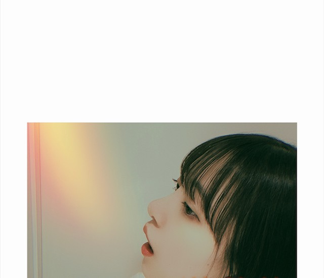

2020/0609Tue夏に聴きたい曲はなんですか？
暑いですね
夏に聴きたくなる曲ってたくさんありますよね〜
みなさんのナツウタ 聞かせてください！

あつーいって言ってる顔です
クーラーと扇風機が欠かせません...
長袖はもう着ない！
でもこれで急に寒くなったら嫌やなぁ


もんぞー
この間豚汁作ったのですが
お母さんに合格をもらいました！
わーい ((o(^∇^)o))

また作ろ♪
46時間TVたのしみ〜
ではでは
2020/06/09 16:18
コメント(861)
いいんだよ、きっと！好きです
裸足でSummer、ガルル、オフショアガール
が聞きたい！
が聞きたい！
andymori
『すごい速さ』
『クラブナイト』
『空は藍色』
『青い空』
『1984』
『グロリアス軽トラ』
などを聴いています
『すごい速さ』
『クラブナイト』
『空は藍色』
『青い空』
『1984』
『グロリアス軽トラ』
などを聴いています
未央奈～！
可愛いです❤️
夏に聴きたい歌はね～、すぐに思いつくのだと、
ガールズルールかな！
大好きな曲だよ～(*´ω｀)
もんぞー、元気そうで良かった♪
私も楽しみ～☺️
可愛いです❤️
夏に聴きたい歌はね～、すぐに思いつくのだと、
ガールズルールかな！
大好きな曲だよ～(*´ω｀)
もんぞー、元気そうで良かった♪
私も楽しみ～☺️
乃木坂だとガールズルールはほんとに夏！！って感じ☺︎
スカイダイビングは何か涼しい気持ちになれる笑笑
でも乃木坂の夏曲は全部好きだな〜
あとはbacknumberのわたがしとか好きー！
うちこないだの夜ご飯豚汁だったよー(どうでもええ）
スカイダイビングは何か涼しい気持ちになれる笑笑
でも乃木坂の夏曲は全部好きだな〜
あとはbacknumberのわたがしとか好きー！
うちこないだの夜ご飯豚汁だったよー(どうでもええ）
乃木坂の夏歌もいいけどそれ以外ならGalileo Galileiの夏空が大好きです。
堀ちゃんブログ更新ありがとう！
豚汁美味しそう！ちょうど仕事から帰って来たばかりだからお腹減った食べたいー
夏うた、湘南乃風の睡蓮花かな！
乃木坂だと裸足でSummerかな！
46時間TV楽しみに待ってるね！ ではでは
豚汁美味しそう！ちょうど仕事から帰って来たばかりだからお腹減った食べたいー
夏うた、湘南乃風の睡蓮花かな！
乃木坂だと裸足でSummerかな！
46時間TV楽しみに待ってるね！ ではでは
アイビーカラーっていうバンドの｢青い風｣って曲がすきです！！
爽やかでいい曲なので是非聞いてほしいです！！！
爽やかでいい曲なので是非聞いてほしいです！！！
こんばちは
夏うたと言えば、TUBEのあ～夏休み サザンの勝手シンドバッドかな ちょい古いけど(笑) 後はガールズルール、裸足でサマーかな
豚汁美味しそう この時期は汗だくになりそうだけど(笑)
もんぞー君は元気ですか？
夏うたと言えば、TUBEのあ～夏休み サザンの勝手シンドバッドかな ちょい古いけど(笑) 後はガールズルール、裸足でサマーかな
豚汁美味しそう この時期は汗だくになりそうだけど(笑)
もんぞー君は元気ですか？
こんばんは。ブログ更新ありがとうございます。
私は古い人間なので、夏と言ったら、ベンチャーズ、ビーチボーイズなんかのサーフ音楽を思い出します。未央奈ちゃんが生まれるはるか前、1960年代のバンドです。ベンチャーズはヴォーカルがいないインストバンドです。日本で言うとやっぱりTUBE,サザンオールスターズ、湘南乃風なんかでしょうか。今年は夏フェスの類はやっぱり自粛しちゃうのかな？まだまだ我慢ですね。
ではまた。
私は古い人間なので、夏と言ったら、ベンチャーズ、ビーチボーイズなんかのサーフ音楽を思い出します。未央奈ちゃんが生まれるはるか前、1960年代のバンドです。ベンチャーズはヴォーカルがいないインストバンドです。日本で言うとやっぱりTUBE,サザンオールスターズ、湘南乃風なんかでしょうか。今年は夏フェスの類はやっぱり自粛しちゃうのかな？まだまだ我慢ですね。
ではまた。
ブログ更新ありがとうございます！
夏に聴きたい曲はたくさんあるのですが、「ひと夏の長さより...」、「太陽ノック」、「空扉」の３曲が特に好きです！
未央奈ちゃんもお体に気を付けて頑張ってください！
夏に聴きたい曲はたくさんあるのですが、「ひと夏の長さより...」、「太陽ノック」、「空扉」の３曲が特に好きです！
未央奈ちゃんもお体に気を付けて頑張ってください！
ブログ更新ありがとうございます！
夏に聴きたい曲、乃木坂は外しますね～
夏の大三角 -nico touches the walls
HOT LIMIT -T.M. Revolution
僕らのユリイカ -NMB48
Ho! サマー -タッキー&翼
がパッと思い付きました！
未央奈はやっぱり「海がきこえる」のやつですかね？
夏に聴きたい曲、乃木坂は外しますね～
夏の大三角 -nico touches the walls
HOT LIMIT -T.M. Revolution
僕らのユリイカ -NMB48
Ho! サマー -タッキー&翼
がパッと思い付きました！
未央奈はやっぱり「海がきこえる」のやつですかね？
夏はGalileo Galileiの夏空、SHISHAMOの熱帯夜、RADWIMPSのスパークルはマストで聴くなぁ。長袖は自分もタンスの奥に閉まっちゃったから寒くなると困るの分かる笑
ジコチューで行こうが好きだな。
豚汁旨そう！！
豚汁旨そう！！
ブログ更新ありがとう
俺は高嶺の花子さんかな！
俺は高嶺の花子さんかな！
ブログ更新ありがとうございます！
夏聴く曲は、前前前世、君がくれた夏、us、say it again、LUV
ME、Like a Fool、I'm fineとかです。多すぎて書ききれませんが、乃木坂の曲も頻繁に聴きます。
暑さに負けずこれからも頑張ってください！
夏聴く曲は、前前前世、君がくれた夏、us、say it again、LUV
ME、Like a Fool、I'm fineとかです。多すぎて書ききれませんが、乃木坂の曲も頻繁に聴きます。
暑さに負けずこれからも頑張ってください！
豚汁美味しそう❗
King Gnuの″sorrows″です！
疾走感溢れるメロディーは最高ですよ！
疾走感溢れるメロディーは最高ですよ！
嵐のSummer Splash!っていう曲は、夏やし、ライブでも盛り上がる曲！あと、夏疾風とかPower of the Paradise などなど。2曲とも嵐の曲です！よかったらぜひぜひ。
WANIMAと乃木坂聞いてます！
WANIMAは夏のどこかえ、アゲイン、シグナル
乃木坂は裸足でSummerです
他にも聞いてますけどトップはこれです
WANIMAは夏のどこかえ、アゲイン、シグナル
乃木坂は裸足でSummerです
他にも聞いてますけどトップはこれです
湘南乃風の睡蓮花と純恋歌とはなびがオススメです
GReeeeNの夏の音が好き！
もちろん未央奈ちゃんも好き！
もちろん未央奈ちゃんも好き！
ブログ更新ありがとう！
豚汁おいしそう！
夏曲は乃木坂ならやっぱり裸足でSummerかな〜
他は浜崎あゆみのBLUE BIRDとかJuly 1stをよく聴くよ(^^)
豚汁おいしそう！
夏曲は乃木坂ならやっぱり裸足でSummerかな〜
他は浜崎あゆみのBLUE BIRDとかJuly 1stをよく聴くよ(^^)
夏だぜ(*´∀｀)！夏の曲と言ったら〜free&easy♪♪♪♪ヽ(´▽｀)/かな 乃木坂46に本気はまり出した頃だしね (*´∀｀)
すちやよ♥️♥️
ブログ更新ありがとう
「路面電車の街」を夏に聴くと気持ちが穏やかになれそうやから聴きたい
「路面電車の街」を夏に聴くと気持ちが穏やかになれそうやから聴きたい
ブログ更新ありがとう
今年の夏は暑くなりそうですね
僕が聴きたくなるナツウタは裸サマ、太陽ノック、ロマイカです
未央奈の豚汁飲みたい〜
今年の夏は暑くなりそうですね
僕が聴きたくなるナツウタは裸サマ、太陽ノック、ロマイカです
未央奈の豚汁飲みたい〜
乃木坂なら、ガルルとか裸足でSummerですかね〜
それ以外なら、ceroさんのSummer Soul、UVERworldさんのシャカビーチ~Laka Laka La~
この2つは夏に聴きたい曲ですね笑
それ以外なら、ceroさんのSummer Soul、UVERworldさんのシャカビーチ~Laka Laka La~
この2つは夏に聴きたい曲ですね笑
裸でsummerと逃げ水
若者のすべてとsummer nude
若者のすべてとsummer nude
「とん汁師匠ジウコ」
マジでとん汁美味しそうやね
2期ちゃんはもれなく皆料理上手だなあ
工事中や他の番組からみるとね
のりさんにもハンバーグ❀❀❀
の時みたいに食べさせてあげて笑
純奈もちゅんまいも暑い暑いって
言ってた笑
これは東京も本気、ガチやな
そろそろ扇風機選手1人で
奮闘はキツいよね
マジでとん汁美味しそうやね
2期ちゃんはもれなく皆料理上手だなあ
工事中や他の番組からみるとね
のりさんにもハンバーグ❀❀❀
の時みたいに食べさせてあげて笑
純奈もちゅんまいも暑い暑いって
言ってた笑
これは東京も本気、ガチやな
そろそろ扇風機選手1人で
奮闘はキツいよね
ひと夏!
こんにちは。
暑いですね。
熱中症に気をつけてくださいね。
暑いですね。
熱中症に気をつけてくださいね。
こんにちは・・・？
こんばんは・・・？
日が長くなって、この時間帯１８時の挨拶を
どれにしようか？迷う日々を送っております。
未央奈はなんて挨拶してますか？
あつーいって言ってる写真
ゴジラの様に口から炎を吹いておりますが（笑笑）
これは狙ってですね（笑笑）
じゃなければ、笑いの神が舞い降りた？？（笑笑）
エアコン・扇風機が手放せない・・全く同感
でも、もう寒くなる事はないかも
しかしながら、寝冷えにはご注意を・・・
夏歌は昔からの物であれば
■大滝詠一さん
「君は天然色」
「カナリア諸島にて」
「ペパーミント・ブルー」
「夏のペーパーバック」
■山下達郎さん
「踊ろよ、フィッシュ」
「ＲＩＤＥ ＯＮ ＴＩＭＥ」
「ＳＰＡＲＫＬＥ」
「高気圧ガール」
「僕らの夏の夢」これはとてもヒットしたアニメ映画の
主題歌だよ。知ってる？
■桑田佳祐さん、サザンオールスターズ
「波乗りジョニー」
「希望の轍」
「真夏の果実」
「明日晴れるかな」
■乃木坂４６
「太陽ノック」
「ガールズルール」
「裸足でＳＵＭＭＥＲ」
「あらかじめ語られるロマンス」
「走れ！Ｂｉｃｙｃｌｅ」
「おいでシャンプー」
「１３日の金曜日」
「なぞの落書き」
「夏のＦｒｅｅ＆Ｅａｇｙ」
「何度目の青空か」
「扇風機」
「Ｉ ａｍ Ｌｏｖｉｎｇ？」
「涙が悲しみだった頃」
いやぁ～、やっぱ乃木坂が多くなりました～
豚汁旨そう～～！
白みそやね。 合わせやないんや。
うちでは何故かジャガイモが入っている・・・
でも上手い！
でははは
こんばんは・・・？
日が長くなって、この時間帯１８時の挨拶を
どれにしようか？迷う日々を送っております。
未央奈はなんて挨拶してますか？
あつーいって言ってる写真
ゴジラの様に口から炎を吹いておりますが（笑笑）
これは狙ってですね（笑笑）
じゃなければ、笑いの神が舞い降りた？？（笑笑）
エアコン・扇風機が手放せない・・全く同感
でも、もう寒くなる事はないかも
しかしながら、寝冷えにはご注意を・・・
夏歌は昔からの物であれば
■大滝詠一さん
「君は天然色」
「カナリア諸島にて」
「ペパーミント・ブルー」
「夏のペーパーバック」
■山下達郎さん
「踊ろよ、フィッシュ」
「ＲＩＤＥ ＯＮ ＴＩＭＥ」
「ＳＰＡＲＫＬＥ」
「高気圧ガール」
「僕らの夏の夢」これはとてもヒットしたアニメ映画の
主題歌だよ。知ってる？
■桑田佳祐さん、サザンオールスターズ
「波乗りジョニー」
「希望の轍」
「真夏の果実」
「明日晴れるかな」
■乃木坂４６
「太陽ノック」
「ガールズルール」
「裸足でＳＵＭＭＥＲ」
「あらかじめ語られるロマンス」
「走れ！Ｂｉｃｙｃｌｅ」
「おいでシャンプー」
「１３日の金曜日」
「なぞの落書き」
「夏のＦｒｅｅ＆Ｅａｇｙ」
「何度目の青空か」
「扇風機」
「Ｉ ａｍ Ｌｏｖｉｎｇ？」
「涙が悲しみだった頃」
いやぁ～、やっぱ乃木坂が多くなりました～
豚汁旨そう～～！
白みそやね。 合わせやないんや。
うちでは何故かジャガイモが入っている・・・
でも上手い！
でははは
flumpoolの夏よ止めないでyour romanticが好きです
暑い夏を熱く楽しんでる感じです！
暑い夏を熱く楽しんでる感じです！
ジコチューで行こう！がいいなー
乃木坂の夏曲とMrs. GREEN APPLEの青と夏と点描の唄です！
わたしのナツウタは大原櫻子ちゃんの真夏の太陽！
夏に聞きたくなる曲かぁ。
やっぱ乃木坂に固まっちゃうかなぁ！
｢ひと夏｣とかもいいけど｢逃げ水｣もいいよねぇ！
やっぱ夏はアガル曲が多いね！
今年は自粛して出来ないけどフェスが多いからかな。
やっぱ乃木坂に固まっちゃうかなぁ！
｢ひと夏｣とかもいいけど｢逃げ水｣もいいよねぇ！
やっぱ夏はアガル曲が多いね！
今年は自粛して出来ないけどフェスが多いからかな。
俺のために豚汁作って
夏の日の1993/class
ナギイチ/NMB48
渚のCHERRY/AKB48
本気ボンバー！/Berryz工房
とかかなー？
ナギイチ/NMB48
渚のCHERRY/AKB48
本気ボンバー！/Berryz工房
とかかなー？
ほんと暑いですね(;´д｀)
最近はvividの夏花とか7!!(セブンウップス)のラヴァーズとか聴いてます(^^)
最近はvividの夏花とか7!!(セブンウップス)のラヴァーズとか聴いてます(^^)
太陽ノック ドラマは時々見直します ＤＶＤ買ってて良かった 初森ベマーズのファンは多いと思いますよ 2を見たいとファンがコメントしてました
全メンバー出演というのが良いんです
裸足でsummer 良い曲です 明るく成ります
今年の夏曲はどうなるのかな
全メンバー出演というのが良いんです
裸足でsummer 良い曲です 明るく成ります
今年の夏曲はどうなるのかな
Pharrell Williams Featuring Jay-ZのFrontin'が最高に心地いいです
乃木坂やとガールズルールとジコチューで、ほかのアーティストさんでB’zやとゆるぎないものひとつとか、サザンとかかな
湘南乃風のSummersいいですよ！
夏が楽しみになる！
夏が楽しみになる！
ワンダフルデイズ聴きたい〜。
夏のfree&easy ですね
自分のナツウタはEvery Little Thingの「FOREVER YOURS」です
初めてバイクを買って迎えた夏でこの曲を聴きながら風になってました
とても爽やかで軽快なラブソングです
YUIのSUMMER SONGです
青春ど真ん中
青春ど真ん中


夏に聞きたいのはやっぱり裸足でsummerです！